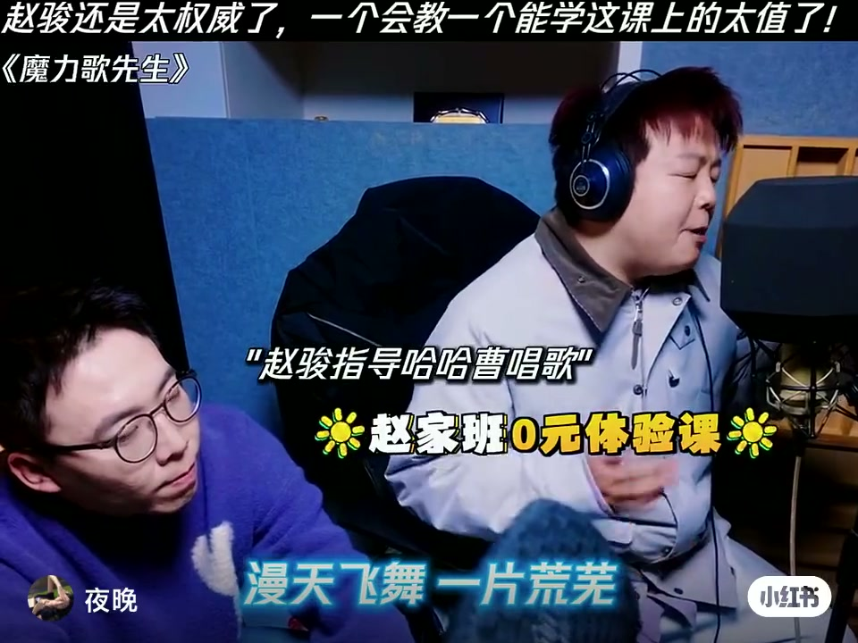
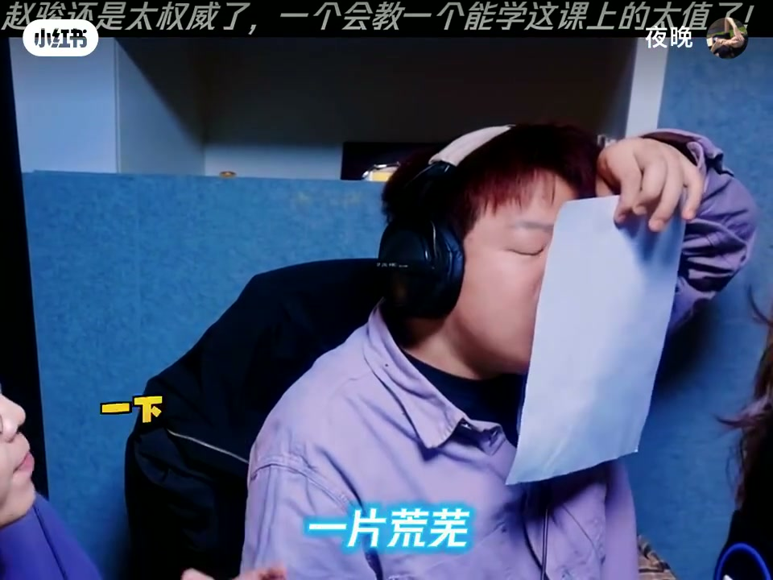
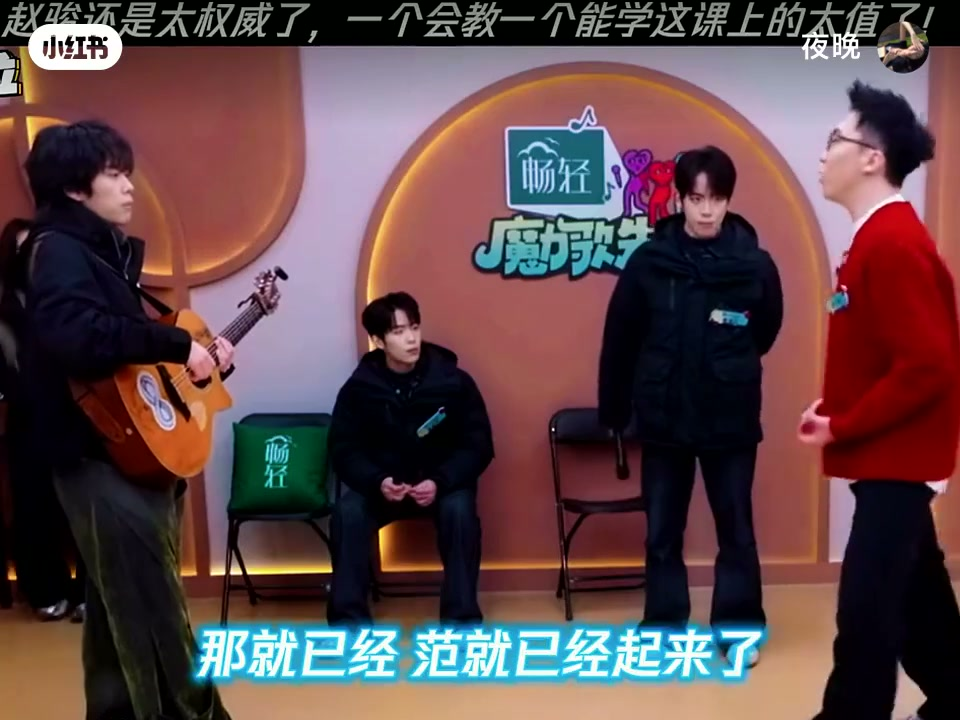

内容要点
这是一条约 2 分半的综艺混剪：赵骏在《魔力歌先生》里给哈哈曹等学员上「赵家班」声乐课。前半是棚内拆句、找音色、用纸练气；后半切入旁人转述制作人夸他音准，以及台上强调「提前起范儿、睁眼看」的表演细节。ASR 常把歌词「漫天」听成「满天」、「赵骏」听成「赵俊」，正文按画面与语境校正，文末转录仍保留 Whisper 原文。
知识结构
「漫天飞舞」与「一片荒芜」之间要断开；演唱要「稍微爷们一点」，别软趴趴地「睡」在音上。
先找并固定属于自己的音色；拿纸作道具，专门盯「舞」「飞」的发声，并点出「这是音功夫」。
纸贴脸示范声音进管道；逐字抠「重—来」；说明挡气不是为了憋住，而是「你太大了」——气量过大。
旁人转述制作人：赵骏音准波动「不超过 10」，北京录过很多艺人「没见过这么离谱的」。
最后一句要提前三四句让观众「看待」到范儿；对每个表演细节负责，并当面要求「睁眼睛看」。
剪辑想证明的「权威」，不只是音准好，而是把断句、音色、气息、咬字和舞台表情管理绑成同一堂可执行的课。
00:00-00:18断句：飞舞与荒芜之间要断开
开场就是录音棚双人合唱：画面叠「赵骏指导哈哈曹唱歌」「赵家班 0 元体验课」，底字歌词是「漫天飞舞 一片荒芜」。赵骏立刻切入技法——不是整句糊过去，而是「满天飞舞跟一片飞舞 / 一片荒芜之间得断开」。随后语气纠偏：「稍微爷们一点那劲」「你别在这睡」「你怎么哭着脸」。综艺标题卡还甩出《我不够爷们吗？！》，把教练口吻的狠劲做成名场面。

00:18-00:45找音色，并用纸盯住「舞」「飞」
纠完语气后，赵骏给出更底层的任务：「我现在需要你找找属于你的音色，固定下来。」接着「开始上道具」——要纸，专门盯学员唱「舞」「飞」时的状态，示范「飞、飞」的发力。学员再唱整句「漫天飞舞一片荒芜…忘记所有才能够重来」时，他甩下一句评价：「这是音功夫。」这一段的信息密度在「音色要固定」和「单字发声也要被听见」，而不是只把整句唱完。
00:45-01:50纸贴脸进「管道」，再抠「重来」与气量
中段继续道具课：他把白纸贴在脸前，说「一下你的声音就会进到那个管道」。随后又卡在「重来」二字——「不是 / 是重 / 重来 / 你唱的是重来」。更关键的一句是边界说明：「我跟你说这个并不是为了让你不能出气，而是你太大了。」学员连喊「我有感觉了」，现场气氛从苛刻转成顿悟式的狂欢，旁人起哄「我是超人 / 你是罗泽」之类玩笑（ASR 对人名不稳定，仅作现场气氛记录）。

01:49-02:13制作人背书：音准波动「不超过 10」
剪辑切到旁人转述：谱里「没有发出那么高的声音」，赵骏却去录音棚（ASR 写成「sqoog」，听不清）录，制作人直接说「这是个唱歌怪」。接着是可核对的技术说法：「看他的那个音准，他那个波动不超过 10」；并补充此人在北京录过很多艺人，「没见过这么离谱的」。这是整条片子把「权威」从课堂态度落到可量化音准叙事的段落——注意数字「10」的单位视频未明示（音分或其他），只能当作节目口述，不宜外推成声学标准。
02:13-02:34家长式教练：提前起范儿，睁眼看观众
收尾旁白把赵骏定位成「大家庭里面的家长」：「他不仅仅教大家唱歌」。具体要求落在表演层——最后一句时「你得让观众早点看待你」「提前三四句」「范儿就已经起来了」；并且「对每个表演的细节都非常负责」，当面补刀「睁眼睛看」。画面切到综艺棚：吉他、学员、红衣赵骏同框，台标仍是《魔力歌先生》。整条剪辑的闭环是：技法课 + 音准神话 + 舞台表情管理，共同支撑标题里的「太权威了」。
